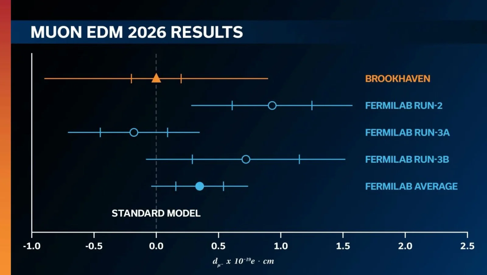

One year after its final measurement of the muon magnetic anomaly, the Muon g-2 Collaboration at Fermilab has reported a new search for a different property of the muon: its electric dipole moment (EDM). An EDM would mean a tiny, permanent separation of positive and negative charge inside the muon. Because it violates time-reversal and charge-parity (CP) symmetry, the Standard Model predicts a value of about 10−38 e·cm, far below any experimental reach. Seeing a non-zero muon EDM would therefore be an unambiguous sign of new physics, and a possible new source of the CP violation needed to explain why the universe is made of matter.
The experiment searches for the EDM almost for free, using the same data as the g-2 analysis. The magnetic moment drives the familiar horizontal precession of the muon spin; an EDM would tilt the precession plane and add a small vertical oscillation to the decay positrons. The straw-tracker stations measured the average vertical angle of these positrons, using data from Runs 2 and 3 (2019–2020), about a quarter of the full Fermilab dataset.
No EDM was found. The result, dμ = (−0.35 ± 0.19stat ± 0.34sys) × 10−19 e·cm, is consistent with zero and sets a new direct limit of |dμ| < 1.1 × 10−19 e·cm at 95% confidence level. This is about 1.5 times more stringent than the long-standing Brookhaven limit of 1.8 × 10−19 e·cm, making it the tightest direct bound on the muon EDM to date. It is the first direct muon EDM search carried out at Fermilab, and only the third anywhere in the past 50 years.
Kim Siang Khaw was a member of the collaboration's Muon EDM Task Force. Analysis of the remaining Fermilab data is ongoing, and dedicated next-generation searches — including the frozen-spin muon EDM experiment at PSI, in which our group is also involved — aim to push the sensitivity much further.
News release: Muon g-2 experiment places new constraints on a forbidden property of muons (Fermilab / Brookhaven National Laboratory)